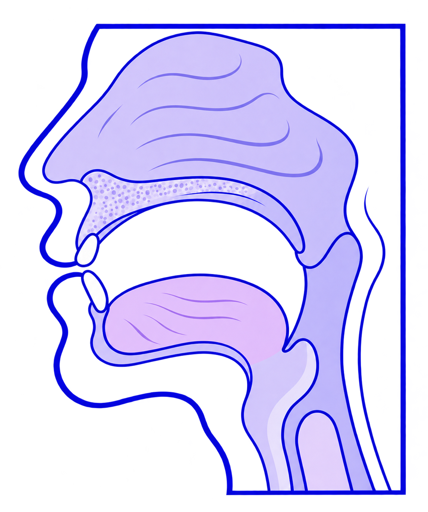

针对一个发音难点反复练习，或用一份混合练习检验多个发音专题。
选择前后鼻音、平翘舌音等具体专题，进入该专题的发音图解、字词和大字选择练习。
从多个发音专题的大字库中随机抽题，每次重新测试都会更换一批。
先选择最需要改善的一组发音，再进入对应的听辨、发音位置与常用字词练习。
先听清韵尾收音位置，再分别练习常见字词。
比较舌尖位置，处理长沙话与普通话之间常见的对应偏差。
用“南／蓝、牛／刘”等最小对立词建立 n / l 的听觉区别。
继续处理唇齿音与舌根音、易混韵母。
有些字单独读和连起来读不一样，也有些拼写容易多写一个字母。看例词，再分清它们。
“你好”写作 nǐ hǎo；连着说时，前面的“你”读得像第二声，后面的“好”仍读第三声。拼音标的是原调，不跟着改写。
先看词怎么分组：“展览｜馆”连读时，前两个字读得像第二声；“纸｜老虎”通常是“纸”读半三声、“老”读得像第二声。不能把所有三字词都套成同一种读法。
“烟”写作 yān。ian 自成音节时写作 yan，不在 y 后再添 i；读音并没有因为省写而变成另一个韵母。
“一半”“不对”里的“一”“不”在第四声前读得像第二声；“一天”里的“一”读第四声。先认清后一个字的声调，再连起来读。
注：这里说的“三声”在语音学中叫“上声”；连读时声调发生变化，叫“连读变调”。
把鼠标移到名称或图形上，对应位置会变亮。先认识各专题共用的发音部位，再进入具体练习。
